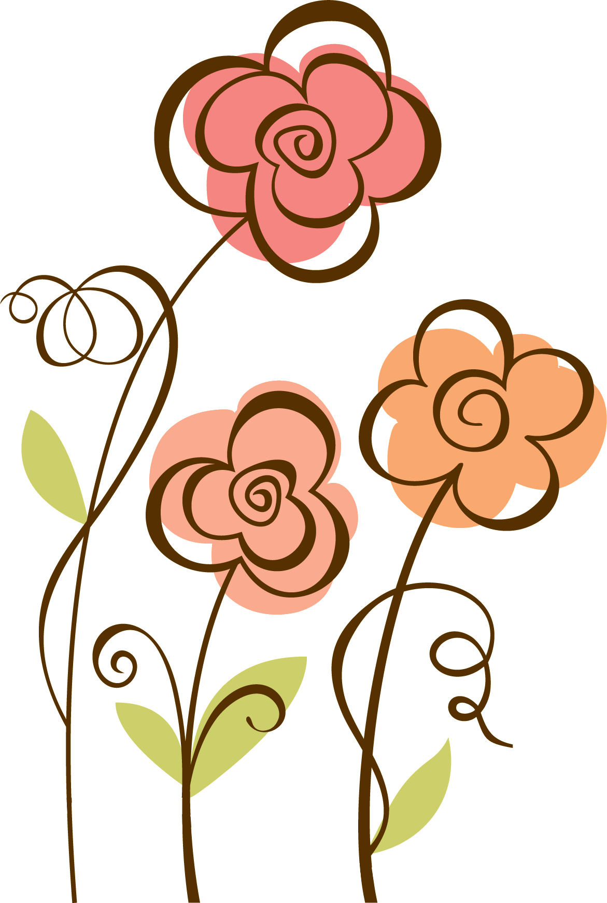
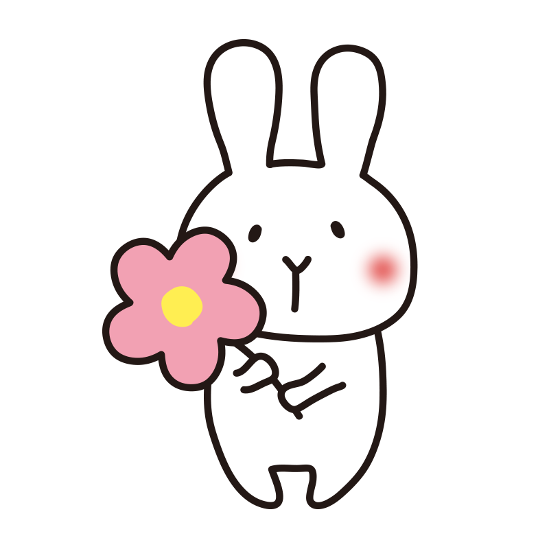
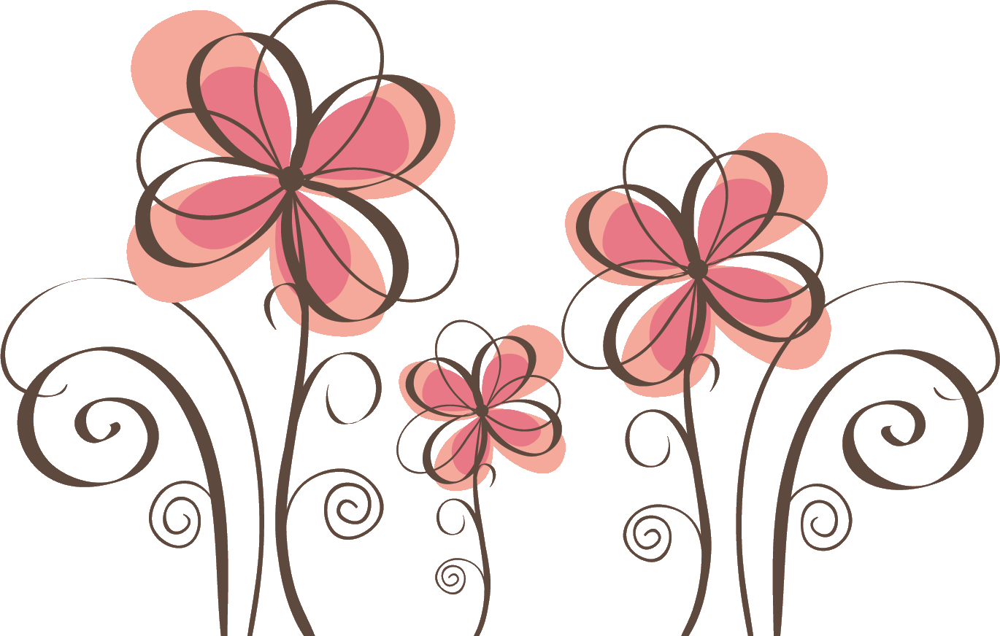

🌼３月のイベントカレンダー
| Sun | Mon | Tue | Wed | Thu | Fri | Sat |
|---|---|---|---|---|---|---|
| 23 | 24 | 25 | 26 | 27 | 28 ツバキ展 |
1 ツバキ展 |
| 2 ツバキ展 |
3  |
4  |
5 |
6  |
7 |
8 春ラン展 |
| 9 春ラン展 |
10 |
11 |
12 |
13
春の |
14
春の |
15
春の |
| 16
春の |
17 |
18 |
19 |
20
友の会 |
21 友の会 |
22
友の会 |
| 23
友の会 |
24 |
25 |
26 |
27
むつみの生き物 |
28
むつみの生き物 |
29
むつみの生き物 |
| 30
むつみの生き物 |
31
むつみの生き物 |